기계가공조립기능사 (2002-04-07 기출문제)
1과목: 기계가공법 및 안전관리
1. 밀링 안전작업 중 틀린 설명은?
- 보안경을 착용한다.
- 장갑착용을 금한다.
- 변속은 정지 상태에서 한다.
- 기계운전 중 다듬질면의 거칠기를 조사한다.
(정답률: 94%)

2. 철도차량용 바퀴만 가공하는 전용 선반은?
- 공구선반
- 응용선반
- 모방선반
- 차륜선반
(정답률: 92%)
3. 센터리스 연삭기에서 통과 이송법으로 연삭하려고 한다. 조정 숫돌바퀴의 바깥지름이 400 mm, 회전수가 30 rpm, 경사각이 4°일 때, 1분동안의 이송속도는 얼마인가?
- 약 540.44 m/min
- 약 317.70 m/min
- 약 37.61 m/min
- 약 2.63 m/min
(정답률: 19%)
4. 셰이퍼의 크기를 표시하는 방법으로 맞는 것은?
- 램의 크기
- 램의 최대행정
- 셰이퍼의 중량
- 램의 매분왕복회수
(정답률: 60%)
5. 숫돌축이 회전하면서 유성운동을 하며 극히 정밀하게 다듬어 지고 또한 활동부분의 이동량이 미크론 단위인 기계는?
- 지그 그라인더
- 윤곽 연마기
- 현미경식 연마기
- 광학식 성형연삭기
(정답률: 42%)
6. 사인 바(sine bar)로 각도를 측정할 때, 몇도를 넘으면 오차가 많게 되는가?
- 10°
- 20°
- 30°
- 45°
(정답률: 83%)
7. 일반적으로 바이스의 크기를 나타내는 것은?
- 바이스 전체의 중량
- 물건을 물릴 수 있는 조오의 폭
- 물건을 물릴 수 있는 최대 거리
- 바이스의 최대 높이
(정답률: 61%)
8. 드릴 안전 작업에 위배되는 것은?
- 큰 구멍을 뚫을 때에는 먼저 작은 구멍을 뚫는다.
- 일감을 드릴링 할 때에는 손으로 꼭잡고 한다.
- 드릴 작업 중 장갑 착용은 위험하다.
- 일감은 반드시 바이스에 물리고 드릴링한다.
(정답률: 90%)
9. 선반에서 보링 작업시 주의할 점이 옳은 것은?
- 회전중에도 측정 할 수 있다.
- 회전 중 손가락을 구멍에 넣지 않는다.
- 보링 바이트의 길이는 되도록 길게 고정한다.
- 회전중에 걸레로 칩을 제거한다.
(정답률: 83%)
10. 전기의 퓨즈가 끊어져 다시 끼웠을 때, 또 다시 끊어졌다면?
- 다시 한번 끼워본다.
- 좀더 가는 것으로 끼운다.
- 전기의 합선여부를 검사한다.
- 굵은 동선으로 바꾸어 끼운다.
(정답률: 84%)
11. KS규격 안전색채 사용통칙에서 지시, 의무적 행동을 표시하는 기본색은?
- 주황
- 파랑
- 빨강
- 자주
(정답률: 81%)
12. 일감표면에 약한 압력으로 숫돌을 눌러대고 일감에 회전운동과 이송을 주며 숫돌을 다듬질할 면에 따라 매우 작고 빠른 진동을 주는 가공법은?
- 래핑(lapping)
- 슈퍼피니싱(super finishing)
- 호우닝(honing)
- 액체호우닝(liquid honing)
(정답률: 76%)
13. 수기가공시 금긋기용 공구에 해당되지 않는 것은?
- V-블럭
- 서피스게이지
- 직각자
- 스크레이퍼
(정답률: 54%)
14. 기계 공장에 있어서 작업화의 바닥으로서 가장 적당한 것은?
- 고무
- 비닐
- 쇠
- 가죽
(정답률: 48%)
15. 드릴(drill)에 대한 설명이 맞는것은?
- 웨브(web)는 드릴 끝 쪽으로 갈수록 두꺼워진다.
- 드릴의 외경은 자루쪽으로 갈수록 커진다.
- 표준 드릴의 날끝각은 100°, 웨브각은 145°, 여유각은 8°이다.
- ø13mm 이상의 드릴은 슬리이브 (sleeve)나 소켓(socket)에 끼워 사용한다.
(정답률: 55%)
16. 선반에 사용되는 척으로서 조오가 동시에 움직이므로 원형, 정다각형의 일감을 고정하는데 편리한 척은?
- 연동척
- 단동척
- 마그네틱척
- 콜릿척
(정답률: 74%)
17. 디닝(thinning)과 가장 관계가 있는 것은?
- 밀링커터
- 바이트날의 측면각
- 그라인더 숫돌의 내측면
- 드릴의 웨브각
(정답률: 45%)
18. 선반에서, 심봉의 종류에 속하지 않는 것은?
- 표준 심봉
- 팽창식 심봉
- 수축식 심봉
- 조립식 심봉
(정답률: 38%)
19. 드릴의 소재로 사용되지 않는 것은?
- 탄소공구강
- 합금공구강
- 고속도강
- 세라믹
(정답률: 77%)
20. 호닝(honing) 다듬질 작업을 할 때 가장 적당한 교차각은?
- 20 ~ 30 °
- 30 ~ 50°
- 60 ~ 70°
- 80 ~ 100°
(정답률: 48%)
2과목: 기계재료 및 요소
21. 모방가공에 의한 형의 조각에서 기본적인 모방절삭 방식의 종류가 아닌 것은?
- 수직 이차원
- 수평 이차원
- 삼차원
- 수평 삼차원
(정답률: 53%)
22. 연삭숫돌에 [보기] 와 같이 표시되어 있었다면 각각의 의미를 순서대로 맞게 나타낸 것은?
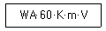
- 조직,결합제,결합도,입도,숫돌입자의 종류
- 숫돌입자의 종류,조직,결합도,입도,결합제
- 숫돌입자의 종류,입도,결합도,조직,결합제
- 결합제,조직,결합도,입도,숫돌입자의 종류
(정답률: 81%)
23. 센터리스(centerless) 연삭작업에서 장점 및 단점에 관한 각각의 설명으로 틀린 것은?
- 장점 : 긴 홈이 있는 일감의 연삭에 적합하다.
- 장점 : 연삭 여유가 적어도 된다.
- 단점 : 연삭 숫돌바퀴의 나비보다 긴 일감은 전후 이송법으로 연삭할 수 없다.
- 단점 : 대형의 중량물은 연삭할 수 없다.
(정답률: 32%)
24. NC 가공에서 지령된 펄스에 의하여 모터를 구동하여 기계를 움직이게 하는 회로 방식은?
- 개방회로
- 폐쇄회로
- 보간회로
- 반폐쇄회로
(정답률: 52%)
25. 표준 테이퍼 게이지의 종류에 해당되지 않는 것은?
- 브라운샤프 테이퍼
- 인터내셔널 테이퍼
- 자르노 테이퍼
- 쟈콥스 테이퍼
(정답률: 40%)
26. 초경 정면 밀링 커터의 각부 명칭에 해당되지 않는 것은?
- 블레이드
- 아버
- 쐐기
- 슴베
(정답률: 55%)
27. 커터의 날수가 10개이고 1날당 이송량이 0.14㎜, 회전수 715 rpm으로 연강을 가공할 때 테이블의 이송속도는 몇 ㎜/min인가?
- 약 715
- 약 1000
- 약 5100
- 약 7150
(정답률: 63%)
28. 다이얼 게이지에 의한 진원도 측정방법이 아닌 것은?
- 3점법
- 2침법
- 반경법
- 직경법
(정답률: 51%)
29. 브라운 샤프형 분할판에서 지름피치 12, 잇수 76의 스퍼기어의 이를 깎을 때 분할판의 구멍열은?
- 16구멍
- 17구멍
- 18구멍
- 19구멍
(정답률: 36%)
30. 가늘고 긴 공작물을 가공할 경우 방진구를 사용하게 되는데, 일반적으로 직경에 비하여 길이가 몇 배 이상일 경우에 사용하는가?
- 5
- 10
- 15
- 20
(정답률: 42%)
31. 공작물의 재질이 공구에 점착하기 쉬울 때, 공구의 윗면 경사각이 작을 때, 절삭깊이가 클 때 생기기 쉬운 칩은?
- 전단형 칩이다.
- 균열형 칩이다.
- 열단형 칩이다.
- 유동형 칩이다.
(정답률: 39%)
32. 공구 재료의 구비 조건으로 틀린 것은?
- 일감보다 단단하고 인성이 있을 것
- 내마멸성이 작을 것
- 형상을 만들기가 쉽고 가격이 쌀 것
- 높은 온도에서 경도가 떨어지지 않을 것
(정답률: 75%)
33. 스퍼 기어(spur gear)나 헬리컬 기어(helical gear)를 가공하는 데 가장 적합한 호브(hob)나사 형태는?
- 한줄 왼 나사
- 한줄 오른 나사
- 두줄 왼 나사
- 두줄 오른 나사
(정답률: 53%)
34. 1개의 원형 베이스(base)와 팔을 위, 아래로 움직이는데 필요한 피벗(pivot)으로 구성된 로봇의 동작 구조는?
- 직교 좌표 구조
- 원통 좌표 구조
- 극 좌표 구조
- 관절형 구조
(정답률: 34%)
35. 밀링가공 중 떨림(chattering)이 나타나는 현상 설명으로 틀린 것은?
- 거친 가공면
- 절삭조건 향상
- 생산능률 감소
- 공구수명 단축
(정답률: 82%)
36. 원동차의 잇수 28, 종동차의 잇수 84인 한 쌍의 스퍼기어의 속도비(i)는 얼마인가?
- i = 1/3
- i = 1/4
- i = 1/6
- i = 1/8
(정답률: 74%)
37. 다음 중 항온 변태를 통해서만 얻어지는 조직은?
- 트루스타이트(troostite)
- 솔바이트(sorbite)
- 레데브라이트(ledbrite)
- 베이나이트(bainite)
(정답률: 23%)
38. 이 직각 방식에서 모듈이 M=4, 잇수는 72의 헬리컬 기어의 피치원은 몇 ㎜인가? (단, 비틀림각은 30°이다.)
- 132
- 233
- 333
- 432
(정답률: 43%)
39. 인치계 사다리꼴 나사산의 각도로서 맞는 것은?
- 60°
- 29°
- 30°
- 55°
(정답률: 48%)
40. 편상 흑연주철 중에서 인장강도가 몇 kgf/mm2 이상인 주철을 고급 주철이라 하는가?
- 5
- 10
- 25
- 50
(정답률: 54%)
3과목: 기계제도(절삭부분)
41. 절삭공구강의 일종인 고속도강(18-4-1)의 표준성분은?
- Cr18%, W4%, V1%
- V18%, Cr4%, W1%
- W18%, Cr4%, V1%
- W18%, V4%, Cr1%
(정답률: 72%)
42. 훅의 법칙(Hooke's law)이 성립되는 구간은?
- 비례한도
- 탄성한도
- 항복점
- 인장강도
(정답률: 36%)
43. 일반적으로 정밀 공작기계의 밑면이 받는 하중은?
- 압축하중
- 인장하중
- 충격하중
- 비틀림하중
(정답률: 47%)
44. 다음 중 니켈합금과 관계가 없는 것은?
- 문쯔메탈
- 백동
- 콘스탄탄
- 모넬메탈
(정답률: 47%)
45. 자동차의 핸들, 전동기의 축 등에 사용되며 축에 작은 삼각형 키이 홈을 만들어 축과 보스를 고정시키는 것은?
- 스플라인 축
- 페더키이
- 세레이션
- 접선키이
(정답률: 43%)
46. 전동축에서 동력전달 순서가 맞는 것은?
- 주축 → 중간축 → 선축
- 선축 → 중간축 → 주축
- 선축 → 주축 → 중간축
- 주축 → 선축 → 중간축
(정답률: 36%)
47. 패킹을 끼워 유체의 누설을 방지하는 리벳 작업의 판 두께는?
- 13㎜이하
- 10㎜이하
- 8㎜이하
- 5㎜이하
(정답률: 35%)
48. 비중 1.74로 실용 금속중에서 가장 가볍고 비강도가 알루미늄보다 우수하여 항공기, 자동차, 선박, 전기기기, 광학기계 등에 이용되며 구상흑연 주철의 첨가제로 사용되는 것은?
- Ag
- Cu
- Mg
- Sn
(정답률: 74%)
49. 황동에 Pb1.5∼3.0%를 첨가한 합금을 무엇이라고 하는가?
- 톰백
- 강력 황동
- 문쯔 메탈
- 쾌삭 황동
(정답률: 42%)
50. 테이퍼 핀(taper pin)의 호칭 직경으로 바른 것은?
- 핀의 굵은 쪽 직경
- 핀의 가는 쪽 직경
- 핀의 중간 직경
- 핀 길이 1/2지점의 직경
(정답률: 57%)
51. 보기 도면과 같은 단면도 명칭는?
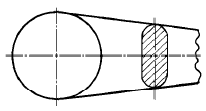
- 부분 단면도
- 직각 도시 단면도
- 회전 도시 단면도
- 가상 단면도
(정답률: 66%)
52. 축의 치수가
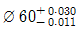
일 때 치수공차는 얼마인가?- 0.030
- 0.011
- 0.019
- 0.041
(정답률: 67%)
53.
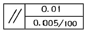
의 형상공차 설명으로 올바른 것은?- 소정의 길이 100mm 에 대하여 0.0⑤mm, 전체길이에 대하여 0.01mm의 평행도
- 소정의 길이 100 mm 에 대하여 0.0⑤mm, 전체길이에 대하여 0.01mm의 대칭도
- 소정의 길이 100 mm 에 대하여 0.0⑤ mm, 전체길이 대하여 0.0⑤ mm 의 직각도
- 소정의 길이 100 mm 에 대하여 0.0⑤ mm, 길이에 대하여 0.0⑤ mm 의 평행도
(정답률: 72%)
54. 다음 중 스케치 작업방법의 종류가 아닌 것은?
- 프리이 핸드
- 간접모양 뜨기
- 직접모양 뜨기
- 청사진 뜨기
(정답률: 59%)
55. 보기 도면의 치수에서 기준치수는?
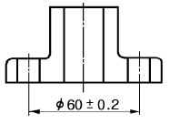
- 60.2
- 59.8
- 60
- 0.2
(정답률: 75%)
56. 보기 입체도의 화살표 방향이 정면도일 때, 우측면도로 가장 적합한 투상도는?
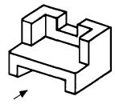
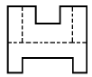
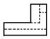
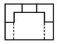
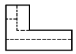
(정답률: 85%)
57. 다음 입체도에서 화살표 방향의 정면도로 적합한 것은?
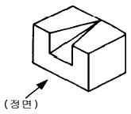
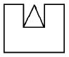
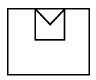
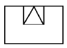
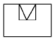
(정답률: 75%)
58. 치수 보조기호 표시가 잘못 설명된 것은?
- φ: 참고치수
- □ : 정사각형의 변
- R : 반지름
- C : 45도의 모따기
(정답률: 78%)
59. 보기 입체도에서 화살표쪽을 정면도로 한다면 평면도를 정확하게 나타낸 것은? (단, 평면도에서 상하, 좌우방향의 형상은 대칭이다.)
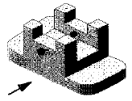
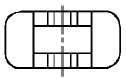
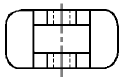
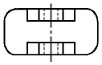
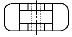
(정답률: 68%)
60. 구멍지름과 축의 기본치수가 φ42 일 때, 최소틈새는 0.018mm, 최대틈새가 0.⑤3mm인 끼워 맞춤은?
- 헐거운 끼워 맞춤
- 억지 끼워 맞춤
- 중간 끼워 맞춤
- 정밀 끼워 맞춤
(정답률: 60%)